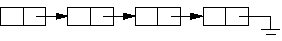

Ahora vamos a ver dos tipos de estructuras totalmente dinámicas (que puedan aumentar o disminuir realmente de tamaño durante la ejecución del programa). Primero veremos las listas, y más adelante los árboles binarios. Hay otras muchas estructuras, pero no son difíciles de desarrollar si se entienden bien estas dos.
Ahora “el truco” consistirá en que dentro de cada dato almacenaremos todo lo que nos interesa, pero también una referencia que nos dirá dónde tenemos que ir a buscar el siguiente.
Sería algo como:
(Posición: 1023).
Nombre : 'Nacho Cabanes'
Web : 'www.nachocabanes.com'
SiguienteDato : 1430
Este dato está almacenado en la posición de memoria número 1023. En esa posición guardamos el nombre y la dirección (o lo que nos interese) de esta persona, pero también una información extra: la siguiente ficha se encuentra en la posición 1430.
Así, es muy cómodo recorrer la lista de forma secuencial, porque en todo momento sabemos dónde está almacenado el siguiente dato. Cuando lleguemos a uno para el que no esté definido cual es el siguiente dato, quiere decir que se ha acabado la lista.
Por tanto, en cada dato tenemos un enlace con el dato siguiente. Por eso este tipo de estructuras recibe el nombre de “listas simplemente enlazadas” o listas simples. Si tuvieramos enlaces hacia el dato siguiente y el posterior, se trataría de una “lista doblemente enlazada” o lista doble, que pretende hacer más sencillo el recorrido hacia delante o hacia atrás.
Con este tipo de estructuras de información, hemos perdido la ventaja del acceso directo: ya no podemos saltar directamente a la ficha número 500. Pero, por contra, podemos tener tantas fichas como la memoria nos permita, y eliminar una (o varias) de ellas cuando queramos, recuperando inmediatamente el espacio que ocupaba.
Para añadir una ficha, no tendríamos más que reservar la memoria para ella, y el compilador de C nos diría “le he encontrado sitio en la posición 4079”. Entonces nosotros iríamos a la última ficha y le diríamos “tu siguiente dato va a estar en la posición 4079”.
Esa es la “idea intuitiva”. Ahora vamos a concretar cosas en forma de programa en C.
Primero veamos cómo sería ahora cada una de nuestras fichas:
struct f { /* Estos son los datos que guardamos: */
char nombre[30]; /* Nombre, hasta 30 letras */
char direccion[50]; /* Direccion, hasta 50 */
int edad; /* Edad, un numero < 255 */
struct f* siguiente; /* Y dirección de la siguiente */
};
La diferencia con un “struct” normal está en el campo “siguiente” de nuestro registro, que es el que indica donde se encuentra la ficha que va después de la actual, y por tanto será otro puntero a un registro del mismo tipo, un “struct f *”.
Un puntero que “no apunta a ningún sitio” tiene el valor NULL (realmente este identificador es una constante de valor 0), que nos servirá después para comprobar si se trata del final de la lista: todas las fichas “apuntarán” a la siguiente, menos la última, que “no tiene siguiente”, y apuntará a NULL.
Entonces la primera ficha definiríamos con
struct f *dato1; /* Va a ser un puntero a ficha */
y la comenzaríamos a usar con
dato1 = (struct f*) malloc (sizeof(struct f)); /* Reservamos memoria */
strcpy(dato1->nombre, "Pepe"); /* Guardamos el nombre, */
strcpy(dato1->direccion, "Su casa"); /* la dirección */
dato1->edad = 40; /* la edad */
dato1->siguiente = NULL; /* y no hay ninguna más */
(No debería haber anada nuevo: ya sabemos cómo reservar memoria usando “malloc” y como acceder a los campos de una estructura dinámica usando ->).
Ahora que ya tenemos una ficha, podríamos añadir otra ficha detrás de ella. Primero guardamos espacio para la nueva ficha, como antes:
struct f *dato2;
dato2 = (struct f*) malloc (sizeof(struct f)); /* Reservamos memoria */
strcpy(dato2->nombre, "Juan"); /* Guardamos el nombre, */
strcpy(dato2->direccion, "No lo sé"); /* la dirección */
dato2->edad = 35; /* la edad */
dato2->siguiente = NULL; /* y no hay ninguna más */
y ahora enlazamos la anterior con ella:
dato1->siguiente = dato2;
Si quisieramos introducir los datos ordenados alfabéticamente, basta con ir comparando cada nuevo dato con los de la lista, e insertarlo donde corresponda. Por ejemplo, para insertar un nuevo dato entre los dos anteriores, haríamos:
struct f *dato3;
dato3 = (struct f*) malloc (sizeof(struct f)); /* La tercera */
strcpy(dato3->nombre, "Carlos");
strcpy(dato3->direccion, "Por ahí");
dato3->edad = 14;
dato3->siguiente = dato2; /* enlazamos con la siguiente */
dato1->siguiente = dato3; /* y la anterior con ella */
printf("La lista inicialmente es:\n");
La estructura que hemos obtenido es la siguiente
Dato1 - Dato3 - Dato2 - NULL
Gráficamente:

Es decir: cada ficha está enlazada con la siguiente, salvo la última, que no está enlazada con ninguna (apunta a NULL).
Si ahora quisiéramos borrar Dato3, tendríamos que seguir dos pasos:
1.- Enlazar Dato1 con Dato2, para no perder información.
2.- Liberar la memoria ocupada por Dato3.
Esto, escrito en "C" sería:
dato1->siguiente = dato2; /* Borrar dato3: Enlaza Dato1 y Dato2 */
free(dato3); /* Libera lo que ocupó Dato3 */
Hemos empleado tres variables para guardar tres datos. Si tenemos 20 datos, ¿necesitaremos 20 variables? ¿Y 3000 variables para 3000 datos?
Sería tremendamente ineficiente, y no tendría mucho sentido. Es de suponer que no sea así. En la práctica, basta con dos variables, que nos indicarán el principio de la lista y la posición actual, o incluso sólo una para el principio de la lista.
Por ejemplo, una rutina que muestre en pantalla toda la lista se podría hacer de forma recursiva así:
void MuestraLista ( struct f *inicial ) {
if (inicial!=NULL) { /* Si realmente hay lista */
printf("Nombre: %s\n", inicial->nombre);
printf("Dirección: %s\n", inicial->direccion);
printf("Edad: %d\n\n", inicial->edad);
MuestraLista ( inicial->siguiente ); /* Y mira el siguiente */
}
}
Lo llamaríamos con "MuestraLista(Dato1)", y a partir de ahí el propio procedimiento se encarga de ir mirando y mostrando los siguientes elementos hasta llegar a NULL, que indica el final.
Antes de seguir, vamos a juntar todo esto en un programa, para comprobar que realmente funciona: añadimos los 3 datos y decimos que los muestre desde el primero; luego borramos el del medio y los volvemos a mostrar:
/*---------------------------*/
/* Ejemplo en C nº 81: */
/* C081.C */
/* */
/* Primer ejemplo de lista */
/* enlazada simple */
/* */
/* Curso de C, */
/* Nacho Cabanes */
/*---------------------------*/
#include
#include
struct f { /* Estos son los datos que guardamos: */
char nombre[30]; /* Nombre, hasta 30 letras */
char direccion[50]; /* Direccion, hasta 50 */
int edad; /* Edad, un numero < 255 */
struct f* siguiente; /* Y dirección de la siguiente */
};
struct f *dato1; /* Va a ser un puntero a ficha */
struct f *dato2; /* Otro puntero a ficha */
struct f *dato3; /* Y otro más */
void MuestraLista ( struct f *inicial ) {
if (inicial!=NULL) { /* Si realmente hay lista */
printf("Nombre: %s\n", inicial->nombre);
printf("Dirección: %s\n", inicial->direccion);
printf("Edad: %d\n\n", inicial->edad);
MuestraLista ( inicial->siguiente ); /* Y mira el siguiente */
}
}
int main() {
dato1 = (struct f*) malloc (sizeof(struct f)); /* Reservamos memoria */
strcpy(dato1->nombre, "Pepe"); /* Guardamos el nombre, */
strcpy(dato1->direccion, "Su casa"); /* la dirección */
dato1->edad = 40; /* la edad */
dato1->siguiente = NULL; /* y no hay ninguna más */
dato2 = (struct f*) malloc (sizeof(struct f)); /* Reservamos memoria */
strcpy(dato2->nombre, "Juan"); /* Guardamos el nombre, */
strcpy(dato2->direccion, "No lo sé"); /* la dirección */
dato2->edad = 35; /* la edad */
dato2->siguiente = NULL; /* y no hay ninguna más */
dato1->siguiente = dato2; /* Enlazamos anterior con ella */
dato3 = (struct f*) malloc (sizeof(struct f)); /* La tercera */
strcpy(dato3->nombre, "Carlos");
strcpy(dato3->direccion, "Por ahí");
dato3->edad = 14;
dato3->siguiente = dato2; /* enlazamos con la siguiente */
dato1->siguiente = dato3; /* y la anterior con ella */
printf("La lista inicialmente es:\n");
MuestraLista (dato1);
dato1->siguiente = dato2; /* Borrar dato3: Enlaza Dato1 y Dato2 */
free(dato3); /* Libera lo que ocupó Dato3 */
printf("Y tras borrar dato3:\n\n");
MuestraLista (dato1);
return 0;
}
Vamos a ver otro ejemplo, que cree una lista de números, y vaya insertando en ella varios valores ordenados. Ahora tendremos una función para mostrar datos, otra para crear la lista insertando el primer dato, y otra que inserte un dato ordenado
/*---------------------------*/
/* Ejemplo en C nº 82: */
/* C082.C */
/* */
/* Segundo ejemplo de lista */
/* enlazada (ordenada) */
/* */
/* Curso de C, */
/* Nacho Cabanes */
/*---------------------------*/
#include
#include
struct lista { /* Nuestra lista */
int numero; /* Solo guarda un numero */
struct lista* sig; /* Y el puntero al siguiente dato */
};
struct lista* CrearLista(int valor) { /* Crea la lista, claro */
struct lista* r; /* Variable auxiliar */
r = (struct lista*)
malloc (sizeof(struct lista)); /* Reserva memoria */
r->numero = valor; /* Guarda el valor */
r->sig = NULL; /* No hay siguiente */
return r; /* Crea el struct lista* */
}
void MuestraLista ( struct lista *lista ) {
if (lista) { /* Si realmente hay lista */
printf("%d\n", lista->numero); /* Escribe el valor */
MuestraLista (lista->sig ); /* Y mira el siguiente */
}
}
void InsertaLista( struct lista **lista, int valor) {
struct lista* r; /* Variable auxiliar, para reservar */
struct lista* actual; /* Otra auxiliar, para recorrer */
actual = *lista;
if (actual) /* Si hay lista */
if (actual->numero < valor) /* y todavía no es su sitio */
InsertaLista(&actual->sig,valor); /* mira la siguiente posición */
else { /* Si hay lista pero ya es su sitio */
r = CrearLista(valor); /* guarda el dato */
r->sig = actual; /* pone la lista a continuac. */
*lista = r; /* Y hace que comience en el nuevo dato */
}
else { /* Si no hay lista, hay que crearla */
r = CrearLista(valor);
*lista = r; /* y hay que indicar donde debe comenzar */
}
}
int main() {
struct lista* l; /* La lista que crearemos */
l = CrearLista(5); /* Crea una lista e introduce un 5 */
InsertaLista(&l, 3); /* Inserta un 3 */
InsertaLista(&l, 2); /* Inserta un 2 */
InsertaLista(&l, 6); /* Inserta un 6 */
MuestraLista(l); /* Muestra la lista resultante */
return 0; /* Se acabó */
}
No es un fuente fácil de leer (en general, no lo serán los que manejen punteros), pero aun así los cambios no son grandes:
Finalmente, hay varios casos particulares que resultan más sencillos que una lista “normal”. Vamos a comentar los más habituales:
Ejercicio propuesto: Las listas simples, tal y como las hemos tratado, tienen la ventaja de que no hay limitaciones tan rígidas en cuanto a tamaño como en las variables estáticas, ni hay por qué saber el número de elementos desde el principio. Pero siempre hay que recorrerlas desde DELANTE hacia ATRAS, lo que puede resultar lento. Una mejora relativamente evidente es lo que se llama una lista doble o lista doblemente enlazada: si guardamos punteros al dato anterior y al siguiente, en vez de sólo al siguiente, podremos avanzar y retroceder con comodidad. Implementa una lista doble enlazada que almacene números enteros.